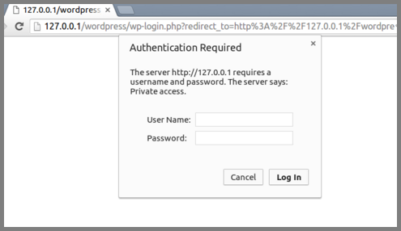
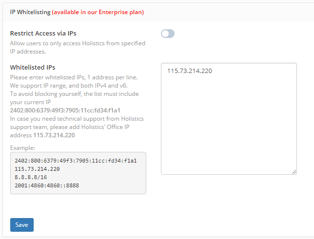
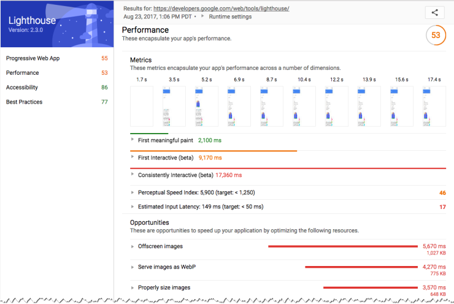
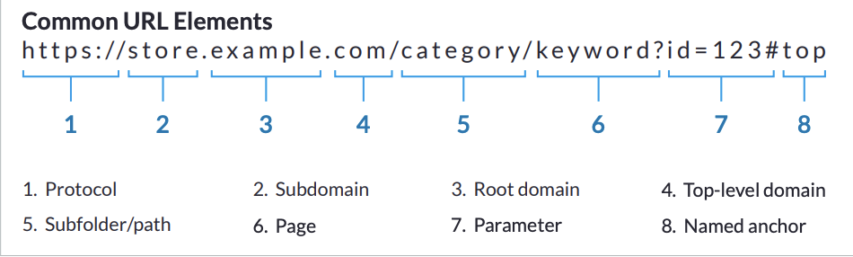

5 SEO Guidelines
for Web Developers
Created by Nadya Marchanka
RS School 2020q1
SEO -
search engine optimization: the process of making your site better for search engines.

Most common technical SEO rules
1. Keep your staging or development site out of the index
Indexed / Indexing
The process of downloading a site or a page’s content to the server of the search engine, thereby adding it to its “index”.
Good: HTTP authentication
Good: IP whitelisting
Maybe: Noindex or Disallow in robots.txt
Disallow: /example-page-1/
Disallow: /example-page-2/
Noindex: /example-page-1/
Noindex: /example-page-2/
Most common technical SEO rules
2. Analyze the load speed of your website

Lighthouse
PageSpeed Insights

- Compress and minify your code
- Reduce page redirects
- Remove render-blocking JavaScript
- Use treeshaking
- Leverage browser caching
- Use a CDN
- Leverage preconnect, prefetch and
preload - Analyze critical rendering path
in Chrome Dev Tools.
Most common technical SEO rules
3. Check if your site is mobile-friendly

Desktop vs Mobile vs Tablet Market Share Worldwide
Apr 2019 - Apr 2020
Source: StatCounter Global Stats - Platform Comparison Market Share
- Responsive web design (adjusts for screen size)
- Dynamic serving (serves different content based on a user’s device)
- Separate URLs (different URLs that serve mobile-optimized content). Not advised.
- Check to see if your site is mobile-friendly in Mobile-Friendly Test
Best practice
Your mobile version should display the same content as your desktop site
Page title tags & meta descriptions should remain the same
Use the meta name="viewport" tag. For example:
Most common technical SEO rules
4. Handle errors and error pages on websites.

- Customize your 404 page and save main navigation
- Add links to the most popular pages
- Be creative with your 404’s web design.

Most common technical SEO rules
5. Use human-readable URL structure
- Choose human-readable URLs with descriptive keywords
- Use short addresses
- Exclude dynamic parameters when possible
- Separate path and page keywords with hyphens("-")
- Use lowercase letters
semantically accurate URL:
https://www.healthline.com/health/how-to-make-hand-sanitizer
Semantically inaccurate URL:
https://www.imdb.com/title/tt0816692/?ref_=hm_fanfav_tt_15_pd_fp1
Best practice

Best practice
- Redirect Issues(temporary redirects, redirect chains, meta refreshes)
- Avoid invisible, barely visible or hidden text, links
- If you need to change the page URL, be sure to set up a redirect to a new page, especially if this page is already old
- Set Rich Snippets and Structured Data
- Add A Click-to-call Link
- Check your code in W3C Validator and fix there